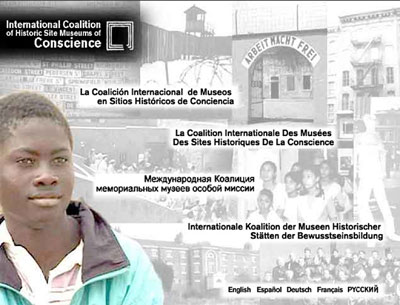
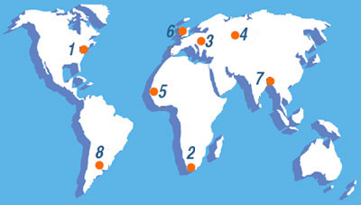
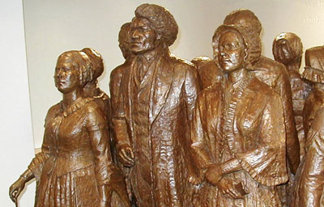
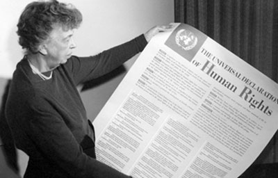
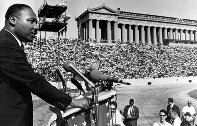

Online Exhibit → Gulag Museum
Beyond the Gulag

Brutal systems have played a prominent role in many countries, including the United States. Although slavery ended after the American Civil War, its consequences persist. The repercussions of the Holocaust in Europe and Apartheid in South Africa reverberate even today.
Similarly, Russians face the legacy of the Gulag. How can citizens in these countries face up to the horrors of the past?


International Coalition of Historic Site Museums of Conscience.
Courtesy of the International Coalition of Historic Sites of Conscience.
Lower East Side Tenement Museum District Six Museum Terezín Memorial Gulag Museum at Perm-36 Maison des Esclaves (Slave House), Goree Island, Senegal The Workhouse, Manchester, England Liberation War Museum, Bangladesh Memoria Alierta (Open Memory)


Map of founding members of the International Coalition of Historic Site Museums of Conscience. Click on a number to read more about one of the historic site museums.
Courtesy of the International Coalition of Historic Site Museums of Conscience.Since its founding in 1999, the International Coalition has grown to 14 sites. The Coalition defines Sites of Conscience as museums that:
- interpret history through a historic site;
- engage in programs that stimulate dialogue on pressing social issues and promote humanitarian and democratic values;
- share opportunities for public involvement in issues raised at the site.
Three National Park Service sites are now accredited members of the Coalition:   
Women’s Rights National Historical Park;


Other recent members include Parque Por la Paz Villa Grimaldi in Chile, the Japanese American National Museum, and the National Civil Rights Museum in the United States.
“Parks are places to stimulate an understanding of history in its larger context, not just as human experience, but as the sum of the interconnection of all living things and forces that shape the earth. In many ways, the National Park Service is our nation’s Department of Heritage.”
National Park System Advisory Board, 2001
The National Park Service seeks to develop historic places as centers for active participation. Civic engagement is an ongoing, dynamic conversation with the public that strengthens citizen understanding of the full meaning and contemporary relevance of our historic resources.
Many national parks have begun to explore ways to create these civic forums. Statue of Liberty National Monument promotes discussion of the changing meanings of liberty among American citizens and visitors from across the globe. Manzanar National Historic Site, location of a former War Relocation Center for Japanese Americans, fosters discussion about civil liberties. Washita Battlefield National Historic Site, which preserves a Cheyenne village site attacked by the United States military, seeks to present the complex nature of the story of the Southern Plains Indian Wars.
For more information about the National Park Service’s Civic Engagement efforts, please visit: Civic Engagment
Online Exhibit | Reflections | Traveling Exhibit | Teacher Resources | About
© 2006–2021, Center for History and New Media, George Mason University.